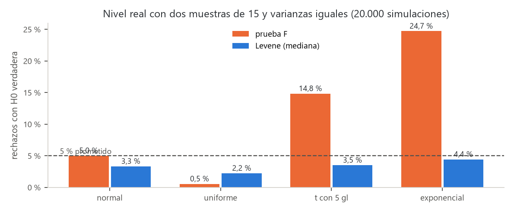
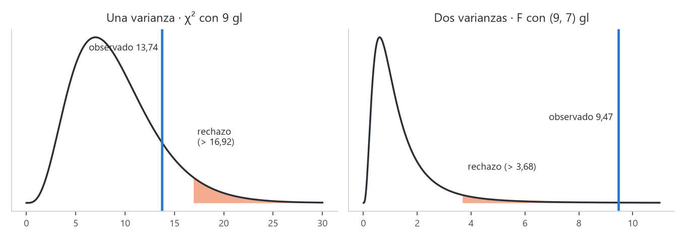
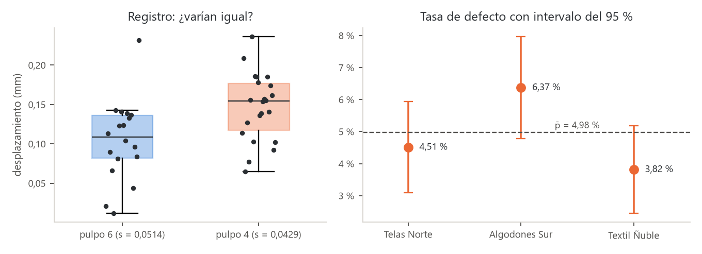

![Camilo Merino]()
Unidad 3 · Comparar varianzas y proporciones
Qué vas a poder hacer. Probar si una varianza cumple un tope con la chi-cuadrado; comparar dos varianzas con la prueba F y, cuando los datos no son normales, con la prueba de Levene; comparar dos proporciones con \(z\) y varias con la chi-cuadrado de homogeneidad; decir dónde está la diferencia sin inflar el error, y calcular cuántos datos hacen falta para que una prueba tenga potencia.
Lo que necesitas antes. De la unidad 1, el esquema de una prueba (hipótesis, estadístico, valor p, decisión) y los errores tipo I y II. De la unidad 2, la prueba \(t\) de dos muestras: allá se preguntó por el centro; acá se pregunta por la dispersión y por tasas. Además, saber que una suma de normales estándar al cuadrado sigue una chi-cuadrado.
Tiempo. Unas 6 horas: 2,5 de lectura con el ejemplo y el cuaderno, 3,5 de práctica.
1. La idea · por qué comparar dispersión y tasas
Dos procesos con la misma media pueden ser muy distintos: uno entrega todos los frascos entre 249 y 251 g y el otro entre 245 y 255 g. Al cliente le llega la dispersión, no la media. Por eso una planta pregunta por la varianza tanto como por el promedio: ¿cumple la máquina el tope de variación que fija la norma?, ¿es más pareja la máquina nueva que la antigua?
Cuando el dato es un sí o un no (defectuoso o bueno, compra o no compra), lo que se compara es una proporción: ¿un turno sella peor que el otro?, ¿un proveedor entrega más prendas defectuosas?
| Pregunta | Parámetro | Prueba | Distribución bajo \(H_0\) |
|---|---|---|---|
| ¿La varianza cumple un valor de referencia? | \(\sigma^2\) | chi-cuadrado de una varianza | \(\chi^2_{n-1}\) |
| ¿Dos varianzas son iguales? | \(\sigma_1^2/\sigma_2^2\) | F (datos normales) o Levene (cualquier forma) | \(F_{n_1-1,\,n_2-1}\) |
| ¿Dos proporciones son iguales? | \(p_1 - p_2\) | \(z\) de dos proporciones | \(N(0,1)\) aproximada |
| ¿Varias proporciones son iguales? | \(p_1 = \dots = p_k\) | chi-cuadrado de homogeneidad | \(\chi^2_{k-1}\) aproximada |
Todas siguen los cinco pasos del ramo: la pregunta en palabras, \(H_0\) y \(H_1\), el estadístico y su distribución bajo \(H_0\), el valor p (o la región de rechazo) y la conclusión en el lenguaje del problema. Antes de los cinco pasos se revisan los supuestos.
2. Una varianza · la prueba chi-cuadrado
Supuestos. Muestra aleatoria e independiente de una población normal. Este supuesto pesa mucho más que en la prueba \(t\) (sección 4).
Si \(X_1, \dots, X_n\) son normales con varianza \(\sigma^2\), entonces
\[\chi^2 = \frac{(n-1)\,S^2}{\sigma_0^2} \sim \chi^2_{n-1} \quad \text{si } H_0:\ \sigma^2 = \sigma_0^2 \text{ es verdadera.}\]
Por qué funciona. \((n-1)S^2 = \sum (X_i - \bar X)^2\). Dividida por \(\sigma^2\) es una suma de cuadrados de normales estándar; se pierde un grado de libertad porque las desviaciones se miden desde \(\bar X\) y suman cero. Si la varianza real es mayor que \(\sigma_0^2\), el cociente crece; si es menor, se achica.
| \(H_1\) | Rechazo con nivel \(\alpha\) | Valor p |
|---|---|---|
| \(\sigma^2 > \sigma_0^2\) (el caso típico: un tope) | \(\chi^2 > \chi^2_{1-\alpha,\,n-1}\) | \(P(\chi^2_{n-1} \ge \chi^2_{obs})\) |
| \(\sigma^2 < \sigma_0^2\) | \(\chi^2 < \chi^2_{\alpha,\,n-1}\) | \(P(\chi^2_{n-1} \le \chi^2_{obs})\) |
| \(\sigma^2 \ne \sigma_0^2\) | fuera de \([\chi^2_{\alpha/2},\ \chi^2_{1-\alpha/2}]\) | el doble de la cola más chica |
La chi-cuadrado no es simétrica: en la prueba bilateral los dos valores críticos se buscan por separado (no son \(\pm\) el mismo número).
Intervalo de confianza. Invirtiendo la prueba,
\[\frac{(n-1)S^2}{\chi^2_{1-\alpha/2,\,n-1}} \le \sigma^2 \le \frac{(n-1)S^2}{\chi^2_{\alpha/2,\,n-1}}\]
y para \(\sigma\) se saca raíz a los dos extremos. El intervalo no queda centrado en \(S\).
Unidades. La varianza se mide en unidades al cuadrado (g², mm², min²). Un tope de «4 minutos» es una desviación estándar; uno de «4 minutos²» es una varianza. Confundirlas cambia el resultado.
3. Dos varianzas · la prueba F
Supuestos. Dos muestras independientes, cada una de una población normal.
\[F = \frac{S_1^2}{S_2^2} \sim F_{n_1-1,\; n_2-1} \quad \text{si } H_0:\ \sigma_1^2 = \sigma_2^2.\]
Por qué funciona. Cada \((n_i - 1)S_i^2/\sigma_i^2\) es una chi-cuadrado; una \(F\) es el cociente de dos chi-cuadrado independientes, cada una dividida por sus grados de libertad. Si las varianzas son iguales, las \(\sigma^2\) se cancelan y queda \(S_1^2/S_2^2\). Bajo \(H_0\) el cociente ronda 1; muy lejos de 1 (hacia arriba o hacia abajo) es evidencia contra \(H_0\).
Cómo se arma en la práctica.
- Bilateral (\(\sigma_1^2 \ne \sigma_2^2\)): se pone la varianza muestral mayor en el numerador y se compara con \(F_{1-\alpha/2}\) (con los grados de libertad del numerador primero). Así basta la cola derecha de la tabla, pero el nivel es \(\alpha/2\) en esa cola; el valor p es el doble de la cola.
- Unilateral (\(\sigma_1^2 > \sigma_2^2\)): en el numerador va la varianza que \(H_1\) dice que es mayor, sea o no la mayor en la muestra, y se compara con \(F_{1-\alpha}\).
- Cola izquierda con una tabla que solo trae la derecha: \(F_{\alpha;\,v_1,\,v_2} = 1 / F_{1-\alpha;\,v_2,\,v_1}\) (se invierten los grados de libertad).
Para qué sirve además. La unidad 2 eligió entre la \(t\) con varianza combinada y la de Welch. La F (o mejor, Levene) es la pregunta previa: ¿se puede suponer \(\sigma_1^2 = \sigma_2^2\)? En el ANOVA de las unidades 7 y 9, la igualdad de varianzas es un supuesto que se revisa con Levene.
4. Cuándo NO usar la F · la prueba de Levene
La prueba \(t\) de medias aguanta bien datos no normales (el teorema central del límite la protege). La F no: la distribución de \(S^2\) depende de la curtosis de la población, y si las colas son más pesadas que las de la normal, \(S^2\) varía mucho más de lo que la F supone. Resultado: la F rechaza \(H_0\) con varianzas iguales mucho más que el \(\alpha\) prometido.
Para verlo se simularon 20.000 pares de muestras de 15 datos con varianzas iguales de cuatro formas distintas (semilla 3003 del verificador) y se contó cuántas veces cada prueba rechazó al 5 %:
| Población | Prueba F | Levene (mediana) |
|---|---|---|
| normal | 5,0 % | 3,3 % |
| uniforme | 0,5 % | 2,2 % |
| t con 5 gl | 14,8 % | 3,5 % |
| exponencial | 24,7 % | 4,4 % |

Con datos exponenciales la F se equivoca una de cada cuatro veces: un valor p chico de una F con datos asimétricos no prueba nada. Levene se mantiene cerca (algo bajo) del 5 % en las cuatro.
La prueba de Levene (en la versión de Brown y Forsythe, con la mediana) convierte la pregunta por la dispersión en una pregunta por una media:
- En cada grupo \(i\) se calcula la distancia de cada dato a la mediana del grupo: \(z_{ij} = |x_{ij} - \tilde x_i|\).
- Si un grupo varía más, sus \(z\) son más grandes en promedio. Se comparan las medias de los \(z\) con un ANOVA de un factor (unidad 7):
\[W = \frac{N-k}{k-1}\cdot\frac{\sum_i n_i(\bar z_i - \bar z)^2}{\sum_i\sum_j (z_{ij} - \bar z_i)^2} \sim F_{k-1,\;N-k}\ \text{(aproximada)}\]
con \(k\) grupos y \(N\) datos en total. Con dos grupos, \(W\) es el cuadrado de la \(t\) de dos muestras aplicada a los \(z\). Usar la mediana (y no la media) hace que un dato extremo pese poco.
| Prueba F | Levene (mediana) | |
|---|---|---|
| Supone normalidad | sí, y es sensible a ella | no |
| Grupos | dos | dos o más |
| Hipótesis unilateral | sí | no (mide si difieren) |
| Potencia con datos normales | la mayor | algo menor |
| En Python | se arma con stats.f |
stats.levene(a, b) (la mediana es la opción por defecto) |
Regla práctica: si los datos son normales (revisar con un gráfico y, en la unidad 5, con Shapiro-Wilk) usa F o Levene; si no lo son o hay atípicos, usa Levene.
5. Dos proporciones · la prueba \(z\)
Supuestos. Dos muestras independientes; cada unidad es éxito o fracaso; las unidades son independientes entre sí; muestras grandes: al menos 5 éxitos y 5 fracasos esperados en cada grupo (algunos textos piden 10).
Con \(x_i\) éxitos en \(n_i\) intentos, \(\hat p_i = x_i/n_i\). Bajo \(H_0:\ p_1 = p_2\) las dos muestras estiman la misma proporción, así que se combinan:
\[\bar p = \frac{x_1 + x_2}{n_1 + n_2} \qquad z = \frac{\hat p_1 - \hat p_2}{\sqrt{\bar p(1-\bar p)\left(\dfrac{1}{n_1} + \dfrac{1}{n_2}\right)}} \sim N(0,1) \text{ aproximada.}\]
Por qué se combina. La prueba calcula qué tan raro sería lo observado si \(H_0\) fuera cierta, y bajo \(H_0\) hay una sola proporción. El intervalo de confianza, en cambio, no supone \(H_0\) y usa cada proporción por separado:
\[(\hat p_1 - \hat p_2) \pm z_{1-\alpha/2}\sqrt{\frac{\hat p_1(1-\hat p_1)}{n_1} + \frac{\hat p_2(1-\hat p_2)}{n_2}}\]
Por esa diferencia, prueba e intervalo pueden discrepar levemente cuando el valor p está justo en el borde. Para una proporción contra un valor \(p_0\) la idea es la misma: \(z = (\hat p - p_0)/\sqrt{p_0(1-p_0)/n}\).
Equivalencia con la chi-cuadrado. Si se ordenan los datos en una tabla de 2 × 2 (grupo × éxito), la chi-cuadrado de la sección 6 (sin corrección de Yates) da exactamente \(z^2\). Es la misma prueba bilateral escrita de dos maneras; la \(z\) tiene la ventaja de permitir una hipótesis unilateral.
Tamaño de muestra. Para detectar \(p_1\) frente a \(p_2\) con nivel \(\alpha\) (bilateral) y potencia \(1-\beta\), en cada grupo hacen falta
\[n = \frac{\left(z_{1-\alpha/2}\sqrt{2\bar p(1-\bar p)} + z_{1-\beta}\sqrt{p_1(1-p_1) + p_2(1-p_2)}\right)^2}{(p_1 - p_2)^2}, \qquad \bar p = \frac{p_1 + p_2}{2}.\]
La diferencia está al cuadrado en el denominador: detectar la mitad de la diferencia cuesta cuatro veces más datos. Diferencias chicas entre tasas chicas exigen miles de unidades.
6. Varias proporciones · chi-cuadrado de homogeneidad
Con \(k\) grupos y la pregunta \(H_0:\ p_1 = p_2 = \dots = p_k\), los datos forman una tabla de \(k \times 2\) (éxitos y fracasos de cada grupo). Bajo \(H_0\) todos comparten \(\bar p = \sum x_i / \sum n_i\), así que el esperado del grupo \(i\) es \(n_i\bar p\) éxitos y \(n_i(1-\bar p)\) fracasos.
\[\chi^2 = \sum_{\text{celdas}} \frac{(O - E)^2}{E} \sim \chi^2_{k-1} \text{ aproximada.}\]
Por qué \(k-1\) grados de libertad. Hay \(k\) tasas libres, pero \(H_0\) obliga a estimar una común: quedan \(k-1\) formas de apartarse de ella. El supuesto es el de toda chi-cuadrado: esperados de al menos 5 en cada celda (unidad 4).
La prueba es global: si rechaza, dice que alguna tasa difiere, no cuál. Para saber dónde:
- Mirar los aportes \((O-E)^2/E\) de cada celda: la celda que más aporta señala al grupo que más se aleja de \(\bar p\).
- Comparar de a pares con \(z\) y corregir por multiplicidad. Con \(k\) grupos hay \(k(k-1)/2\) pares; si cada uno se prueba al 5 %, la probabilidad de algún falso positivo crece. La corrección de Bonferroni multiplica cada valor p por el número de pares (unidad 8 trae métodos más finos).
Puede pasar que la prueba global rechace y ningún par sobreviva a Bonferroni: la global junta la evidencia de todas las celdas, y cada par usa solo una parte. No es contradicción; es que la evidencia alcanza para decir «no son todas iguales» y no para señalar a un culpable con el mismo nivel.
La misma cuenta, con más de dos columnas, es la prueba de independencia de la unidad 4.
7. Ejemplo resuelto · las dos dosificadoras de una fábrica de mermeladas
Una fábrica de mermeladas de San Carlos llena frascos de 250 g con dos dosificadoras. La A es nueva y el proveedor promete que es «mucho más pareja». La norma interna pide que la desviación estándar del peso no pase de 1,5 g. Se pesaron 8 frascos de A y 10 de B (gramos):
| Dosificadora | 1 | 2 | 3 | 4 | 5 | 6 | 7 | 8 | 9 | 10 |
|---|---|---|---|---|---|---|---|---|---|---|
| A (nueva) | 251,2 | 249,8 | 250,6 | 250,1 | 249,5 | 250,9 | 250,3 | 249,7 | ||
| B (antigua) | 252,4 | 248,1 | 250,9 | 247,6 | 251,8 | 249,2 | 253,0 | 248,8 | 250,5 | 251,3 |
Además, en un mes la A cerró 600 frascos con 9 sellos fallados y la B, 640 con 21.
Supuestos. Los frascos se tomaron al azar en distintos momentos (independencia). Con 8 y 10 datos la normalidad no se puede probar con fuerza; los pesos no muestran asimetría ni atípicos. Como la F depende de la normalidad, se confirma con Levene.
Resumen. \(\bar x_A = 250{,}26\) g y \(\bar x_B = 250{,}36\) g: las medias casi no difieren. Las sumas de cuadrados son 2,5387 y 30,9040, así que
\[s_A^2 = \frac{2{,}5387}{7} = 0{,}3627 \text{ g}^2 \ (s_A = 0{,}602 \text{ g}) \qquad s_B^2 = \frac{30{,}9040}{9} = 3{,}4338 \text{ g}^2 \ (s_B = 1{,}853 \text{ g})\]
Pregunta 1 · ¿La B cumple el tope de 1,5 g?
- Pregunta. ¿Hay evidencia de que la desviación de B supera 1,5 g?
- Hipótesis. \(H_0:\ \sigma_B^2 = 2{,}25\) g² frente a \(H_1:\ \sigma_B^2 > 2{,}25\) g² (la norma se escribe con \(\sigma\); la prueba, con \(\sigma^2 = 1{,}5^2\)).
- Estadístico. \(\chi^2 = \dfrac{9 \cdot 3{,}4338}{2{,}25} = 13{,}74\), con 9 gl bajo \(H_0\).
- Valor p. \(P(\chi^2_9 \ge 13{,}74) = 0{,}132\). Región de rechazo al 5 %: \(\chi^2 > 16{,}92\).
- Conclusión. No hay evidencia suficiente de que B supere el tope. Ojo: eso no prueba que lo cumpla. Su \(s_B = 1{,}853\) g está sobre 1,5; con solo 10 frascos la prueba no logra distinguirlo.
Pregunta 2 · ¿La A es más pareja que la B?
- Pregunta. ¿Es menor la varianza de la nueva?
- Hipótesis. \(H_0:\ \sigma_B^2 = \sigma_A^2\) frente a \(H_1:\ \sigma_B^2 > \sigma_A^2\) (unilateral: lo que promete el proveedor). Por eso B va en el numerador.
- Estadístico. \(F = \dfrac{3{,}4338}{0{,}3627} = 9{,}47\), con (9, 7) gl bajo \(H_0\).
- Valor p. \(P(F_{9,7} \ge 9{,}47) = 0{,}0036\). Región de rechazo al 5 %: \(F > 3{,}68\).
- Conclusión. Hay evidencia fuerte de que la dosificadora nueva es más pareja: su varianza es cerca de la novena parte de la antigua.
Confirmación con Levene (no depende de la normalidad): \(W = 7{,}88\) con (1, 16) gl, \(p = 0{,}013\). Las dos pruebas dicen lo mismo.

Pregunta 3 · ¿Sellan igual?
- Pregunta. ¿Difiere la proporción de sellos fallados entre las dosificadoras?
- Hipótesis. \(H_0:\ p_A = p_B\) frente a \(H_1:\ p_A \ne p_B\).
- Estadístico. \(\hat p_A = 9/600 = 1{,}50\ \%\), \(\hat p_B = 21/640 = 3{,}28\ \%\) y \(\bar p = 30/1.240 = 2{,}42\ \%\). El error estándar bajo \(H_0\) es \(\sqrt{0{,}0242 \cdot 0{,}9758\,(1/600 + 1/640)} = 0{,}00873\), y \(z = (0{,}0150 - 0{,}0328)/0{,}00873 = -2{,}04\). Se esperan unos 15 sellos fallados por grupo: la aproximación normal sirve.
- Valor p. \(2\,P(Z \ge 2{,}04) = 0{,}041\).
- Conclusión. Al 5 %, la A falla menos sellos. El intervalo del 95 % para \(p_A - p_B\) va de -3,47 % a -0,09 %: la mejora puede ser de casi 3,5 puntos o de apenas una décima.
Con Python (el cuaderno notebooks/u03_varianzas_proporciones.ipynb lee datos/u03_ejemplo.csv):
from scipy import stats
from statsmodels.stats.proportion import proportions_ztest
chi2 = 9 * b.var(ddof=1) / 1.5**2; stats.chi2.sf(chi2, 9) # 13,74 · p 0,132
F = b.var(ddof=1) / a.var(ddof=1); stats.f.sf(F, 9, 7) # 9,47 · p 0,0036
stats.levene(a, b) # W 7,88 · p 0,013
proportions_ztest([9, 21], [600, 640]) # z -2,04 · p 0,041
Cómo se lee. La nueva dosificadora sí es más pareja (F y Levene coinciden) y falla menos sellos, aunque la mejora en sellos podría ser chica. Sobre la antigua, la prueba no alcanza a condenarla, pero su desviación estimada pasa el tope: lo sensato es medir más frascos antes de seguir usándola, no darla por buena. Decisión: pasar la producción a la A y tomar una muestra de 30 frascos de la B antes de decidir si se repara.
8. Errores típicos
| Error | Cómo evitarlo |
|---|---|
| Concluir «se acepta \(H_0\), las varianzas son iguales» | Se dice «no hay evidencia de que difieran». Con muestras chicas la F tiene poca potencia (ejercicio 3.9) |
| Usar la F con datos asimétricos o con atípicos | La F depende de la normalidad; revisa los datos y usa Levene (sección 4) |
| Poner la varianza mayor arriba y comparar con \(F_{1-\alpha}\) en una prueba bilateral | Con la mayor arriba el nivel en esa cola es \(\alpha/2\): compara con \(F_{1-\alpha/2}\) o duplica la cola |
| Invertir los grados de libertad de la F | El primer número es el del numerador: \((n_{num}-1,\ n_{den}-1)\) |
| Comparar \(S\) con un tope expresado como varianza (o al revés) | Pasa todo a \(\sigma^2\) antes de calcular; revisa si las unidades son g o g² |
| Usar la proporción combinada en el intervalo de confianza | La combinada es solo para la prueba (bajo \(H_0\)); el intervalo usa cada \(\hat p_i\) |
| Hacer todas las \(z\) de a pares al 5 % después de una homogeneidad | Corrige por multiplicidad (Bonferroni) o mira los aportes a la chi-cuadrado |
| Leer un valor p chico como una diferencia importante | Informa la diferencia de tasas y su intervalo; con miles de datos, diferencias mínimas son significativas |
| Mirar solo el valor p y no los supuestos | Antes de los cinco pasos: independencia, normalidad (para F y \(\chi^2\) de una varianza) y esperados \(\ge 5\) (para proporciones) |
9. Práctica
Diez ejercicios: 3.1 a 3.4 básicos, 3.5 a 3.8 intermedios, 3.9 y 3.10 de desafío. Usa \(\alpha = 0{,}05\) salvo que se diga otra cosa. Las pautas están en la sección 10. Todos los datos son ficticios.
3.1 · Marraquetas (básico). Una panadería de Coronel quiere que el peso de sus marraquetas tenga una desviación estándar de a lo más 4 g. En 20 marraquetas pesadas al azar, \(s = 5{,}1\) g. ¿Hay evidencia de que se pasa del tope? Supón pesos normales.
3.2 · Pernos de dos proveedores (básico). Una maestranza mide el largo de pernos de dos proveedores: 13 del primero con \(s_1 = 0{,}84\) mm y 16 del segundo con \(s_2 = 0{,}52\) mm. ¿Difieren sus varianzas? Usa la región de rechazo y el valor p.
3.3 · Latas mal selladas por turno (básico). En una conservera de Talcahuano, el turno de noche selló mal 34 de 980 latas y el de día, 19 de 1.050. ¿Difieren las proporciones de latas mal selladas entre turnos? Revisa la condición de muestras grandes.
3.4 · Valores críticos (básico). Dos muestras independientes de 8 y 11 datos vienen de poblaciones normales con la misma varianza. (a) ¿Qué distribución tiene \(S_1^2/S_2^2\)? (b) Encuentra \(c\) tal que \(P(S_1^2/S_2^2 > c) = 0{,}05\). (c) Encuentra \(d\) tal que \(P(S_1^2/S_2^2 < d) = 0{,}05\) usando solo valores de la cola derecha. (d) Si \(U \sim \chi^2_3\) y \(V \sim \chi^2_6\) son independientes, ¿qué distribución tiene \((U/3)/(V/6)\)?
3.5 · Dos balanzas y un dato raro (intermedio). Un centro de acopio pesó la misma pesa patrón de 10 kg ocho veces en cada balanza:
| Balanza | 1 | 2 | 3 | 4 | 5 | 6 | 7 | 8 |
|---|---|---|---|---|---|---|---|---|
| X | 10,02 | 9,98 | 10,01 | 10,00 | 9,99 | 10,03 | 9,97 | 10,36 |
| Y | 10,04 | 9,95 | 10,01 | 9,97 | 10,06 | 9,94 | 10,03 | 9,99 |
(a) Prueba con F (bilateral) si las varianzas difieren. (b) Prueba lo mismo con Levene (mediana), a mano. (c) ¿Por qué discrepan y a cuál le crees? ¿Qué harías con la octava pesada de X?
3.6 · Despachos atrasados (intermedio). Una tienda en línea de Temuco trabaja con cuatro empresas de reparto. En un mes registró:
| Empresa | Atrasados | Despachos |
|---|---|---|
| A | 18 | 240 |
| B | 34 | 260 |
| C | 12 | 230 |
| D | 25 | 250 |
¿Atrasan en la misma proporción? Arma los esperados, calcula la chi-cuadrado de homogeneidad e indica qué empresa explica más el resultado.
3.7 · Tablas cortadas a largo (intermedio). Un aserradero corta tablas de 1.200 mm y su cliente exige una desviación de a lo más 0,5 mm. Diez tablas midieron (mm):
| Tabla | 1 | 2 | 3 | 4 | 5 |
|---|---|---|---|---|---|
| Largo | 1.200,3 | 1.199,6 | 1.200,9 | 1.199,2 | 1.200,5 |
| Tabla | 6 | 7 | 8 | 9 | 10 |
|---|---|---|---|---|---|
| Largo | 1.201,4 | 1.199,8 | 1.200,4 | 1.199,1 | 1.200,7 |
(a) ¿Hay evidencia de que la desviación supera 0,5 mm? (b) Construye un intervalo del 95 % para \(\sigma\). (c) ¿Qué agrega el intervalo a la prueba?
3.8 · Formulario web (intermedio). Una aseguradora prueba un formulario nuevo (versión 2) contra el actual (versión 1). La 1 se completó en 62 de 1.240 visitas; la 2, en 88 de 1.310. El equipo solo cambiará el formulario si la versión 2 es mejor. (a) Plantea y resuelve la prueba unilateral. (b) ¿Qué habría concluido una prueba bilateral? (c) Calcula el intervalo del 95 % para \(p_1 - p_2\) y comprueba que la chi-cuadrado de la tabla de 2 × 2 (sin Yates) es \(z^2\).
3.9 · ¿Cuánta potencia tenía la F? (desafío). Una prueba F bilateral al 5 % compara dos máquinas con 18 y 22 mediciones (los tamaños del caso de esta unidad). (a) Halla los dos valores críticos. (b) Calcula la potencia si la razón verdadera de varianzas \(\sigma_1^2/\sigma_2^2\) es 1,5, 2 y 3. Pista: si la razón verdadera es \(\rho\), entonces \(F_{obs}/\rho \sim F_{17,21}\). (c) ¿Cuántas mediciones por máquina (iguales en ambas) harían falta para detectar una razón de 2 con potencia del 80 %? (d) ¿Qué significa esto para quien concluye «las varianzas son iguales» con un valor p alto?
3.10 · ¿Cuántas prendas revisar? (desafío). Un taller quiere comparar dos proveedores cuyas tasas de defecto podrían ser 4,5 % y 6,5 %. (a) ¿Cuántas prendas por proveedor hacen falta para detectar esa diferencia con \(\alpha = 0{,}05\) bilateral y potencia del 80 %? (b) Si revisa 830 prendas de cada uno, ¿qué potencia tiene? (c) ¿Cuántas haría falta revisar si la diferencia fuera la mitad (4,5 % y 5,5 %), según la estructura de la fórmula y sin calcular?
10. Pautas
3.1. \(H_0:\ \sigma^2 = 16\) g² frente a \(H_1:\ \sigma^2 > 16\) g². \(\chi^2 = 19 \cdot 5{,}1^2/16 = 30{,}89\) con 19 gl; el crítico al 5 % es 30,14 y \(p = 0{,}042\). Se rechaza: hay evidencia de que la desviación del peso supera los 4 g. La panadería debe revisar el pesado de la masa, no solo el horno.
3.2. \(H_0:\ \sigma_1^2 = \sigma_2^2\) frente a \(H_1:\ \sigma_1^2 \ne \sigma_2^2\). La varianza mayor va arriba: \(F = 0{,}84^2/0{,}52^2 = 2{,}61\) con (12, 15) gl. Bilateral al 5 %: se compara con \(F_{0,975;\,12,15} = 2{,}96\). Como \(2{,}61 < 2{,}96\), no se rechaza; \(p = 0{,}082\) (el doble de la cola). No hay evidencia suficiente de que un proveedor sea más disperso, aunque el primero lo parece: con 13 y 16 pernos la prueba ve poco.
3.3. \(\hat p_{noche} = 3{,}47\ \%\), \(\hat p_{día} = 1{,}81\ \%\), \(\bar p = 53/2.030 = 2{,}61\ \%\). Los éxitos esperados son unos 26 y 27: la condición se cumple. \(z = 2{,}34\) y \(p = 0{,}019\). Al 5 %, el turno de noche sella peor. La diferencia (1,7 puntos) casi duplica la tasa: vale la pena revisar la calibración de la selladora en el cambio de turno.
3.4. (a) \(F_{7,10}\). (b) \(c = F_{0,95;\,7,10} = 3{,}14\). (c) \(d = 1/F_{0,95;\,10,7} = 1/3{,}64 = 0{,}275\). (d) \(F_{3,6}\): es la definición de la F. Por eso \(S_1^2/S_2^2\) es F cuando las varianzas son iguales: cada \(S_i^2\) es una chi-cuadrado dividida por sus grados de libertad, multiplicada por la misma \(\sigma^2\), que se cancela.
3.5. (a) \(s_X^2 = 0{,}01660\) y \(s_Y^2 = 0{,}00190\): \(F = 8{,}75\) con (7, 7) gl, mayor que \(F_{0,975;\,7,7} = 4{,}99\); \(p = 0{,}010\). La F dice que X es más dispersa.
(b) Medianas: 10,005 en X y 10,000 en Y. Distancias \(z = |x - \tilde x|\):
| 1 | 2 | 3 | 4 | 5 | 6 | 7 | 8 | |
|---|---|---|---|---|---|---|---|---|
| \(z\) en X | 0,015 | 0,025 | 0,005 | 0,005 | 0,015 | 0,025 | 0,035 | 0,355 |
| \(z\) en Y | 0,040 | 0,050 | 0,010 | 0,030 | 0,060 | 0,060 | 0,030 | 0,010 |
\(\bar z_X = 0{,}06000\), \(\bar z_Y = 0{,}03625\) y \(\bar z = 0{,}04812\). Suma de cuadrados entre grupos 0,002256; dentro, 0,102988. \(W = \frac{14}{1}\cdot\frac{0{,}002256}{0{,}102988} = 0{,}31\) con (1, 14) gl: \(p = 0{,}59\). Levene no ve diferencia.
(c) Toda la «dispersión» de X está en la octava pesada (10,36). La F la eleva al cuadrado y la deja dominar; Levene usa distancias a la mediana y la pesa poco. Las otras siete pesadas de X son tan parejas como las de Y o más: sin el dato raro, la razón \(s_X^2/s_Y^2\) baja a 0,25. Los datos de X no son normales (Shapiro-Wilk da \(p = 0{,}0001\)), así que se le cree a Levene sobre la dispersión habitual. La octava pesada no se borra: se investiga (¿se apoyó algo en la balanza?, ¿se anotó mal?). Un error grueso ocasional es un problema distinto de la dispersión, y también hay que resolverlo.
3.6. \(\bar p = 89/980 = 9{,}08\ \%\). Esperados de atrasados: \(n_i \cdot 0{,}0908\).
| Empresa | Atrasados | Despachos | Tasa | Esperados atrasados | Aporte atrasados | Aporte a tiempo |
|---|---|---|---|---|---|---|
| A | 18 | 240 | 7,50 % | 21,80 | 0,66 | 0,07 |
| B | 34 | 260 | 13,08 % | 23,61 | 4,57 | 0,46 |
| C | 12 | 230 | 5,22 % | 20,89 | 3,78 | 0,38 |
| D | 25 | 250 | 10,00 % | 22,70 | 0,23 | 0,02 |
\(\chi^2 = 10{,}17\) con 3 gl y \(p = 0{,}017\): las empresas no atrasan en la misma proporción. B (que atrasa más de lo esperado) y C (que atrasa menos) explican casi todo. La conversación con B es la primera; C es el modelo.
3.7. (a) Media 1.200,19 mm, \(s^2 = 0{,}5610\) mm² (\(s = 0{,}749\) mm). \(H_1:\ \sigma^2 > 0{,}25\). \(\chi^2 = 9 \cdot 0{,}5610/0{,}25 = 20{,}20\) con 9 gl, sobre el crítico 16,92; \(p = 0{,}017\). Hay evidencia de que la desviación supera 0,5 mm.
(b) Con \(\chi^2_{0,025;\,9} = 2{,}70\) y \(\chi^2_{0,975;\,9} = 19{,}02\): \(\sigma \in [\sqrt{9 \cdot 0{,}5610/19{,}02},\ \sqrt{9 \cdot 0{,}5610/2{,}70}] = [0{,}515;\ 1{,}367]\) mm.
(c) La prueba dice que se pasa; el intervalo dice cuánto: la desviación real podría ser casi el triple del tope. Con 10 tablas la incertidumbre sobre \(\sigma\) es grande y el intervalo es asimétrico.
3.8. (a) \(\hat p_1 = 5{,}00\ \%\), \(\hat p_2 = 6{,}72\ \%\), \(\bar p = 150/2.550 = 5{,}88\ \%\). \(H_0:\ p_2 = p_1\) frente a \(H_1:\ p_2 > p_1\). \(z = (\hat p_1 - \hat p_2)/ee = -1{,}84\); el valor p de la cola que pide \(H_1\) es \(P(Z \le -1{,}84) = 0{,}033\). Al 5 %, la versión 2 es mejor.
(b) Bilateral: \(p = 0{,}065\), no se rechaza. La hipótesis unilateral se justifica porque se fijó antes de ver los datos (al equipo solo le interesa si la 2 mejora); elegirla después para cruzar el 5 % es hacer trampa.
(c) Intervalo del 95 % para \(p_1 - p_2\): de -3,54 % a 0,10 %, que incluye el cero, igual que la prueba bilateral. El intervalo del 90 % para \(p_2 - p_1\) (de 0,19 % a 3,24 %) es el que corresponde a la prueba unilateral al 5 %. La tabla de 2 × 2 da \(\chi^2 = 3{,}39 = (-1{,}84)^2\).
3.9. (a) Con (17, 21) gl: rechazo si \(F < 0{,}385\) o \(F > 2{,}483\). (b) Potencia \(= P(F_{17,21} > 2{,}483/\rho) + P(F_{17,21} < 0{,}385/\rho)\): 0,14 con \(\rho = 1{,}5\); 0,32 con \(\rho = 2\); 0,65 con \(\rho = 3\). (c) Hacen falta 68 mediciones por máquina. (d) Con 18 y 22 datos, una máquina con el doble de varianza que la otra pasa inadvertida dos de cada tres veces. Un valor p alto en la F dice «no lo vi», no «son iguales». Si la igualdad importa (por ejemplo, para la \(t\) con varianza combinada), es más seguro usar Welch, que no la necesita.
3.10. (a) Con \(\bar p = 5{,}5\ \%\), la fórmula da 2.038,5: hacen falta 2.039 prendas por proveedor. (b) Con 830 por proveedor la potencia es 0,43: más de la mitad de las veces esa diferencia pasaría inadvertida. (c) La diferencia está al cuadrado en el denominador: con la mitad de diferencia hacen falta cerca de cuatro veces más prendas (algo menos, porque las tasas son más bajas y su varianza también). Revisar por muestreo detecta proveedores muy malos; para diferencias de un par de puntos hay que acumular meses de registros.
11. Caso integrador · Estampa Sur: ¿varían igual?, ¿un proveedor falla más?
Estampa Sur es el taller ficticio que recorre el ramo. Sus datos son simulados con semilla fija por
verificacion/caso_estampa_sur_datos.py(archivosdatos/registro.csvydatos/defectos.csv): no describen ningún taller real.
Lo que recibe de la unidad 2. El desplazamiento del registro medio del pulpo 4 es mayor que el del pulpo 6: la \(t\) de Welch dio \(t = -2{,}79\) (\(p = 0{,}0087\)) y la de varianza combinada, \(t = -2{,}84\) (\(p = 0{,}0072\)). Quedó pendiente si se podía suponer la misma varianza.
Pieza 1 · ¿Las dos máquinas varían igual? Con 18 prendas del pulpo 6 y 22 del pulpo 4: \(s_6 = 0{,}0514\) mm (\(s_6^2 = 0{,}002638\)) y \(s_4 = 0{,}0429\) mm (\(s_4^2 = 0{,}001843\)).
- Pregunta. ¿Una máquina dispersa más el registro que la otra?
- Hipótesis. \(H_0:\ \sigma_6^2 = \sigma_4^2\) frente a \(H_1:\ \sigma_6^2 \ne \sigma_4^2\).
- Estadístico. \(F = 0{,}002638/0{,}001843 = 1{,}43\) con (17, 21) gl.
- Valor p. \(p = 0{,}43\) (bilateral). Región de rechazo al 5 %: \(F < 0{,}38\) o \(F > 2{,}48\).
- Conclusión. No hay evidencia de que las máquinas dispersen distinto.
Supuestos: Shapiro-Wilk no muestra alejamiento de la normalidad (\(p = 0{,}34\) en el pulpo 6 y \(0{,}96\) en el pulpo 4), y Levene con la mediana confirma: \(W = 0{,}26\), \(p = 0{,}62\) (con la media, \(p = 0{,}65\)). Pero la potencia de esta F para una razón como la observada es apenas 0,12 (ejercicio 3.9): «no se vio diferencia» no es «son iguales». Por eso la unidad 2 hizo bien en preferir Welch; aquí ambas \(t\) coinciden y la conclusión sobre las medias no cambia.
Pieza 2 · ¿Un proveedor entrega más prendas defectuosas? Se revisaron las prendas lisas de tres proveedores:
| Proveedor | Defectuosas | Revisadas | Tasa | Esperadas defectuosas | Aporte defectuosas | Aporte buenas |
|---|---|---|---|---|---|---|
| Telas Norte | 37 | 820 | 4,51 % | 40,84 | 0,36 | 0,02 |
| Algodones Sur | 58 | 910 | 6,37 % | 45,32 | 3,55 | 0,19 |
| Textil Ñuble | 29 | 760 | 3,82 % | 37,85 | 2,07 | 0,11 |
- Pregunta. ¿Los tres proveedores entregan la misma proporción de prendas defectuosas?
- Hipótesis. \(H_0:\ p_{TN} = p_{AS} = p_{TÑ}\) frente a \(H_1\): alguna difiere.
- Estadístico. Con \(\bar p = 124/2.490 = 4{,}98\ \%\) y los esperados de la tabla (todos sobre 5), \(\chi^2 = 6{,}29\) con 2 gl.
- Valor p. \(p = 0{,}043\).
- Conclusión. Al 5 %, las tasas de defecto no son iguales entre proveedores. Casi todo el estadístico viene de Algodones Sur (más defectuosas de lo esperado) y de Textil Ñuble (menos).
¿Dónde está la diferencia? Las tres comparaciones de a pares con \(z\) y Bonferroni:
| Par | \(z\) | Valor p | Bonferroni (× 3) |
|---|---|---|---|
| Telas Norte y Algodones Sur | -1,70 | 0,090 | 0,269 |
| Telas Norte y Textil Ñuble | 0,69 | 0,489 | 1,000 |
| Algodones Sur y Textil Ñuble | 2,34 | 0,019 | 0,057 |
Ningún par queda bajo 0,05 después de corregir, aunque la prueba global sí rechazó (sección 6). La lectura honesta: hay evidencia de que los proveedores no son iguales y Algodones Sur es el sospechoso, pero con 760 a 910 prendas por proveedor no alcanza para condenarlo solo. El ejercicio 3.10 muestra por qué: para diferencias de dos puntos hacen falta unas 2.000 prendas por proveedor.

Decisión para Estampa Sur. (1) Las dos máquinas se pueden tratar como igual de dispersas, con la cautela de que la prueba ve poco; el problema del pulpo 4 es su centro, no su dispersión. (2) Algodones Sur pasa a revisión reforzada: se le pide su control de calidad y se sigue contando defectuosas hasta juntar unas 2.000 prendas. Sin datos nuevos, la unidad 12 retoma la misma pregunta con otra mirada: ¿qué tan probable es que su tasa supere el 6 %?
Lo que pasa a la unidad 4. La chi-cuadrado de homogeneidad es una tabla de 3 × 2. La unidad 4 la generaliza a cualquier tabla: ¿el tipo de reclamo depende del canal de venta?
12. Para seguir
En los libros del ramo.
- Walpole, Myers, Myers y Ye, Probability & Statistics for Engineers & Scientists (Pearson, 2017): el capítulo de pruebas de hipótesis de una y dos muestras trae las pruebas de una varianza, de dos varianzas y de proporciones. El programa del ramo lo fija como lectura para la comparación de varianzas.
- Montgomery, Design and Analysis of Experiments (Wiley, 2005): en lo que trata de los supuestos del ANOVA está la prueba de Levene modificada.
Abiertos y gratis.
- Diez, Çetinkaya-Rundel y Barr, OpenIntro Statistics, capítulo 6 «Inference for categorical data» (en inglés; una y dos proporciones, chi-cuadrado): https://www.openintro.org/book/os/
- NIST/SEMATECH, e-Handbook of Statistical Methods (en inglés): prueba F https://www.itl.nist.gov/div898/handbook/eda/section3/eda359.htm y prueba de Levene https://www.itl.nist.gov/div898/handbook/eda/section3/eda35a.htm
Con el tutor. Pega tutor/contexto.md al inicio de la conversación con cualquier IA y pídele, por
ejemplo: «Dame dos muestras de 12 datos, una con un atípico, y corrígeme paso a paso la F y la prueba de
Levene».